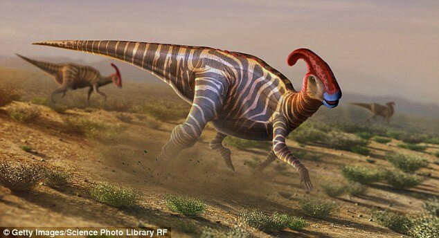

Орнитисхиевые
Птицетазовые, или птицетазовые динозавры или орнитисхии (лат. Ornithischia), — одна из двух основных клад динозавров, рассматриваемая в ранге отряда. Несмотря на своё название, не они, а ящеротазовые динозавры по самой распространённой версии дали начало птицам, у которых «птичий» таз сформировался совершенно независимо.
Были растительноядными (за исключением ранних всеядных видов), меньших размеров, чем ящеротазовые зауроподы. Кроме самых примитивных, имеют приспособления к питанию растительной пищей: сложный кишечник и щёки. Ранние представители были двуногими, позже птицетазовые повторно освоили хождение на четырёх конечностях. В ходе эволюции у поздних представителей отряда концевые фаланги пальцев стали более плоскими и приобрели вид копыт. У многих развились приспособления для защиты от хищников: броня, рога, шипы.
Таз имел четырёхлучевое строение. Лобковая кость имела вырост, направленный назад вдоль седалищной кости (у ящеротазовых кости были практически перпендикулярны). Лобковая кость часто образует новый вырост, направленный вперёд параллельно позвоночнику. Подобное строение таза развивалось у динозавров независимо трижды: у птицетазовых, у надсемейства теризинозавроиды и семейства дромеозавриды. Последнее и является наиболее вероятным предком птиц.
У некоторых видов (Hypsilophodon, Talenkauen и Thescelosaurus) имеются межрёберные костные пластины в передней части рёбер. Некоторые исследователи предлагают, что эти пластины выполняли биомеханические функции, помогали в дыхании либо для обеспечения повышенной жёсткости передней части грудной клетки, в то время как другие полагают, они служили для оборонительных функций.